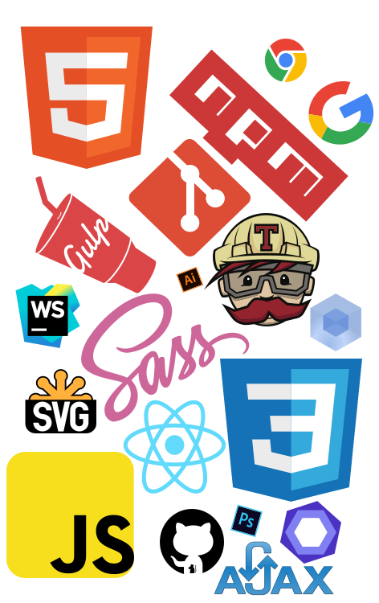

В этой области я сравнительно недавно. Около года. Но эта работа мне действительно нравится, поэтому я постояно двигаюсь вперед и совершенствую свои навыки. Продолжаю учиться и узнавать новое, ведь мир фронтенда не стоит месте. Это круто!
В данный момент я в активном поиске места работы, на котором я смогла бы продолжать развиваться как специалист. Работать над интересными и трудными задачками.
Придерживаюсь семантической, валидной и кроссбраузерной верстки. Пользуюсь методологией БЭМ. Слежу за появлением новых стандартов.
При создании адаптивных интерфейсов и сайтов пользуюсь методом mobaile first. Для более быстрого и качественного написания стилей использую препроцессор Sass(scss).
JavaScript использую нативный. В данный момент прохожу обучение на курсе по React, и очень скоро добавлю его к своему арсеналу.
Так же для автоматизации и улучшения своей работы использую следующие инструменты:
Git
Gulp
WebPack
Travis
EditorConfig
ESLint

Вы также можете ознакомиться с остальными моими сертификатами.